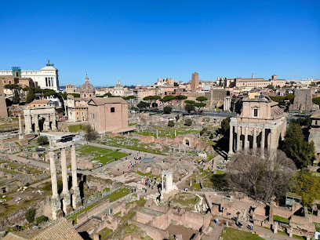

Дата народження: 03.08.2004 Місце народження: м. Донецьк
Школа: академічний ліцей №3 м. Обухів
Університет: КПІ ім. Ігоря Сікорського
Рим - це одне з найбільш вражаючих та історичних міст у світі. Він відомий своєю багатою культурною спадщиною, колизіями римської архітектури, античними пам'ятками, та чудовими вуличками. Плаваючи в атмосфері столітніх легенд та історії, Рим пропонує безмежні можливості для дослідження. Від Колізею до Форуму Романо та Ватикану, кожен крок в цьому місті призводить до захоплюючого відкриття. Рим завжди залишає незабутнє враження своєю красою та історією, і це одне з моїх улюблених місць на планеті.
Фото міста доступне за посиланням.